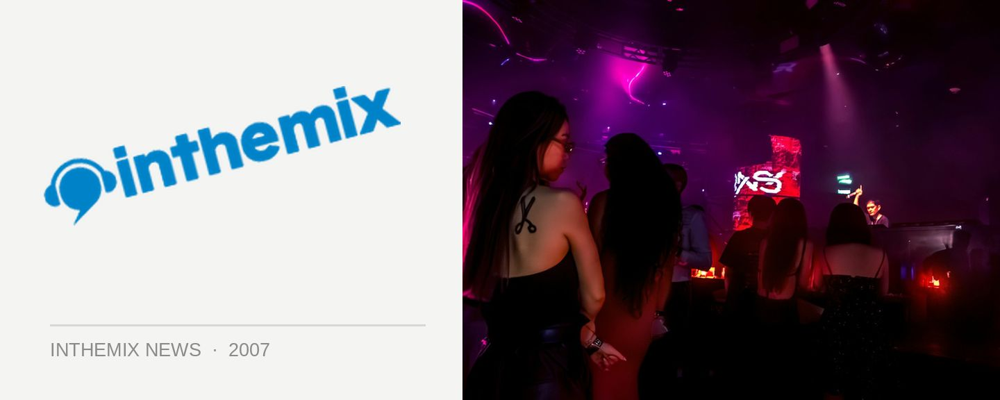

Joey Negro & Nicky Siano play King Street Wharf this NYE
Sydney’s SHE crew continue to deliver quality soulful house music with the news that they’ve bagged both Joey Negro and Nicky Siano to play a massive New Years Eve gig across both levels of The Loft and Bungalow 8.
Joey Negro of course needs no introduction, as one of the most consistent names in dance music since the days of acid house and one of the first to incorporate disco samples into his production. He memorably achieved mainstream success earlier in the decade under the name Jakatta with American Dream, which sampled the theme from American Beauty. Nicky Siano on the other hand is the owner of legendary New York club The Gallery.
SHE takes over The Loft & Bungalow December 31, 6pm – 4am. 1st Release costs $69 +BF while 2nd Release are $79 +BF, while special VIP tickets are available for $150 +BF.